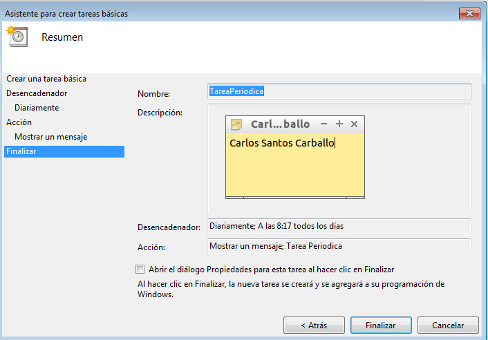
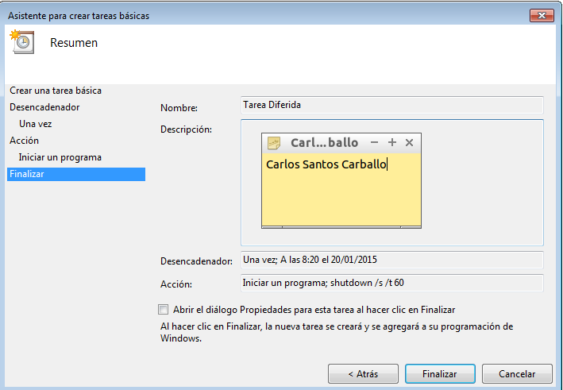
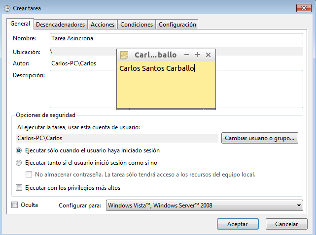
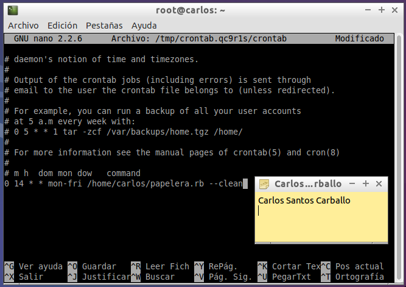
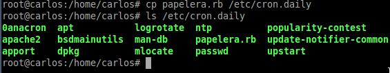
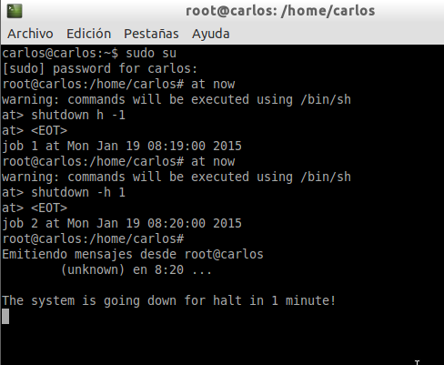

- Módulo: Sistemas Operativos
- Título del trabajo Automatización de tareas
- Componentes del grupo: Carlos Santos Carballo
- Curso Académico: 2014/2015
- Fecha de entrega: 20 de Enero de 2015
Para poder realizar la automatización de tareas debemos acceder al menú "Programador de tareas" y dentro de dicho menú, accedemos a la opción, "Crear tarea básica".
Esta tarea se ejecutará todos los días a las 8:17 y nos mostrará un mensaje cuando se ejecute.
Esta tarea se ejecutará una vez,a las 8:21 del 20/01/15 cuya funcón será la de apagar el ordenador a dicha hora.
Esta tarea se ejecutará todos los martes, miércoles y sábados a las 8:31 cuya función consiste en revisar el disco duro del sistema. Si la tarea no se ejecuta en esa hora, se reiniciará un minuto después de su programación normal.
Básicamente podemos realizar todo nestro trabajo desde la consola del sistema.Debemos tener un script creado, en mi caso Papelera.rb
Esta tarea se ejectuará periodicamente de lunes a viernes de todas las semanas del mes a las 14:00 y su función consiste en vaciar la carpeta .papelera que he creado en una actividad anterior.
Esta tarea ejecutará el script con las opciones por defecto de la carpeta cron.daily. Para ello debemos mover o copiar el script a dicha carpeta.
Esta tarea programa un apagado de la consola en 1 minuto.
